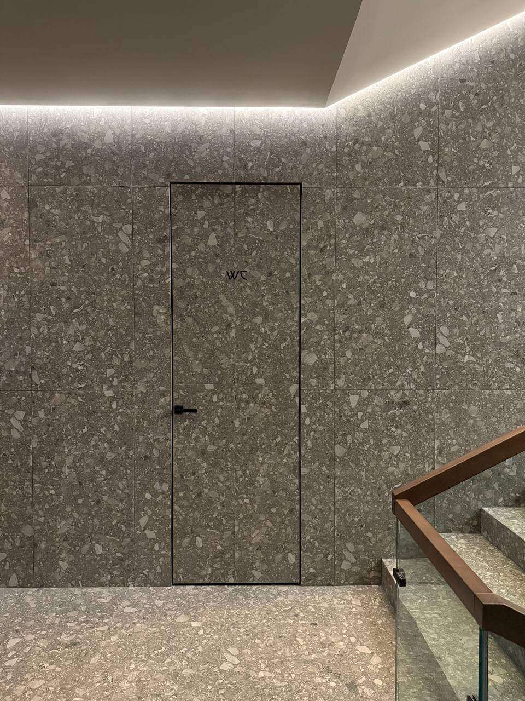
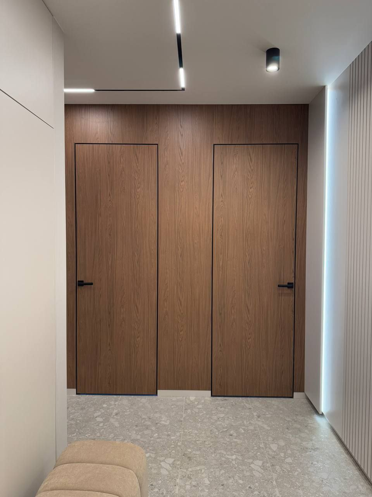
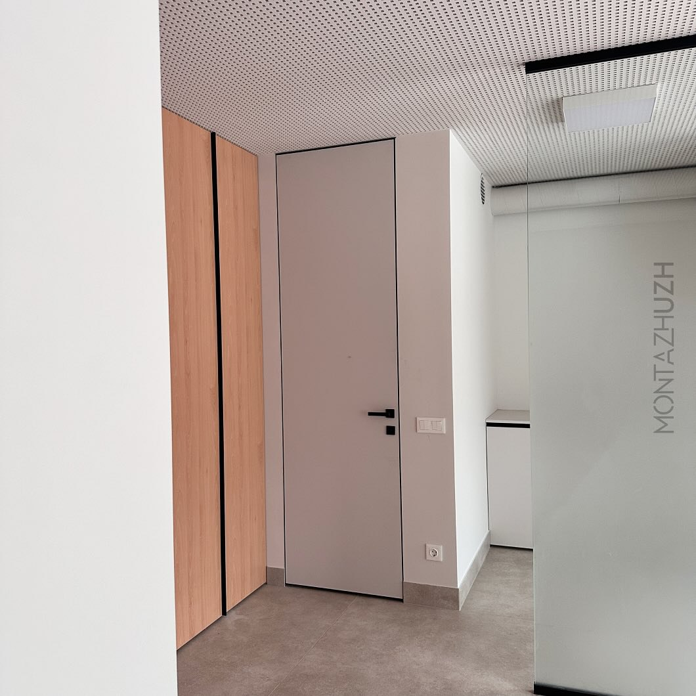
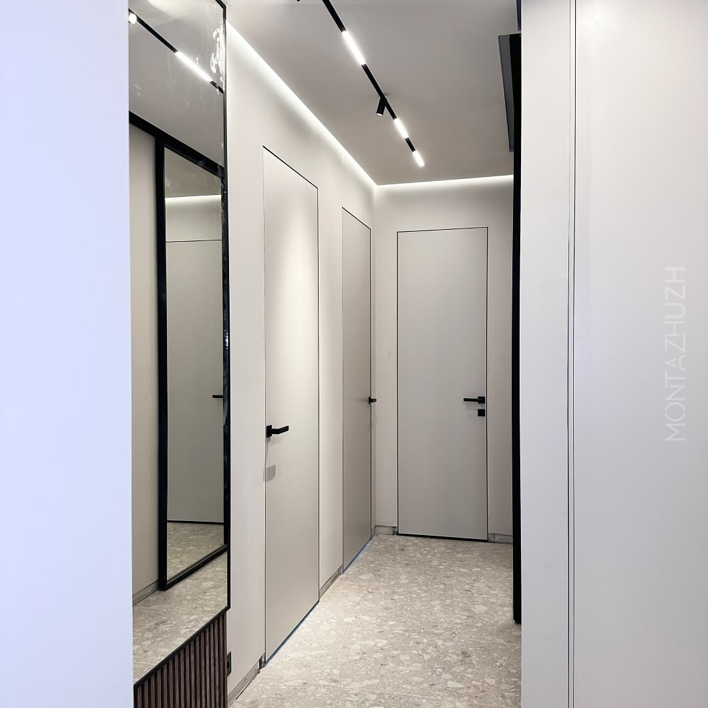
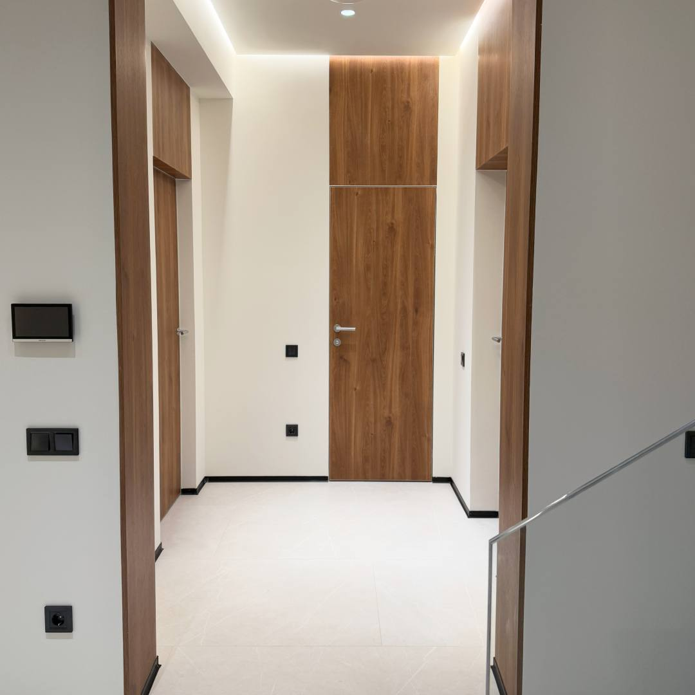
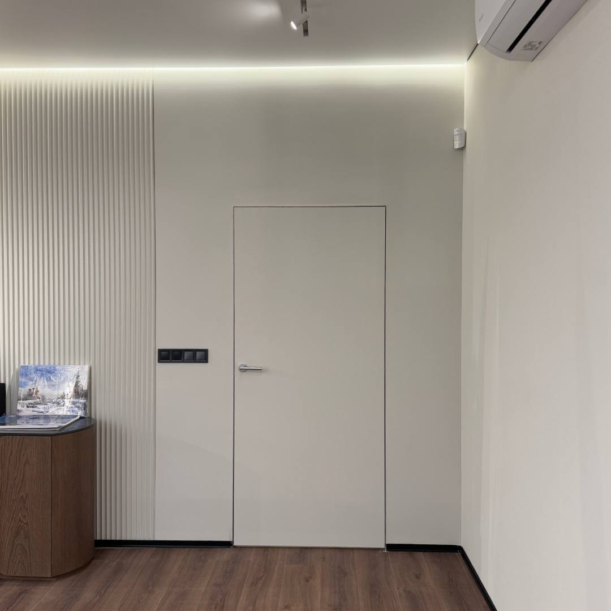
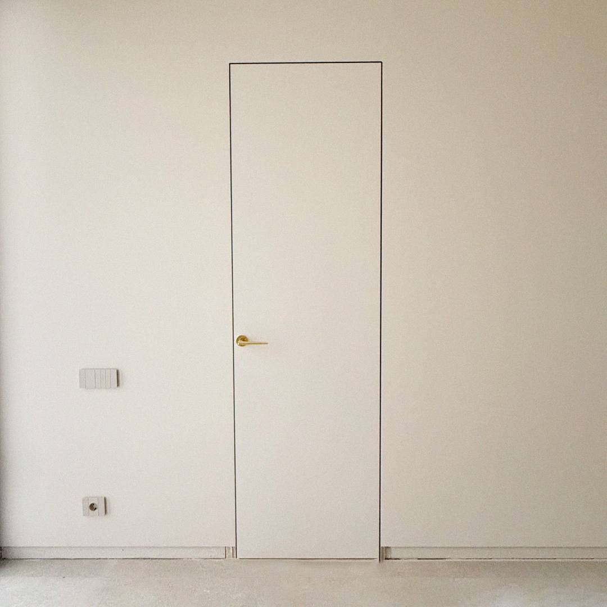
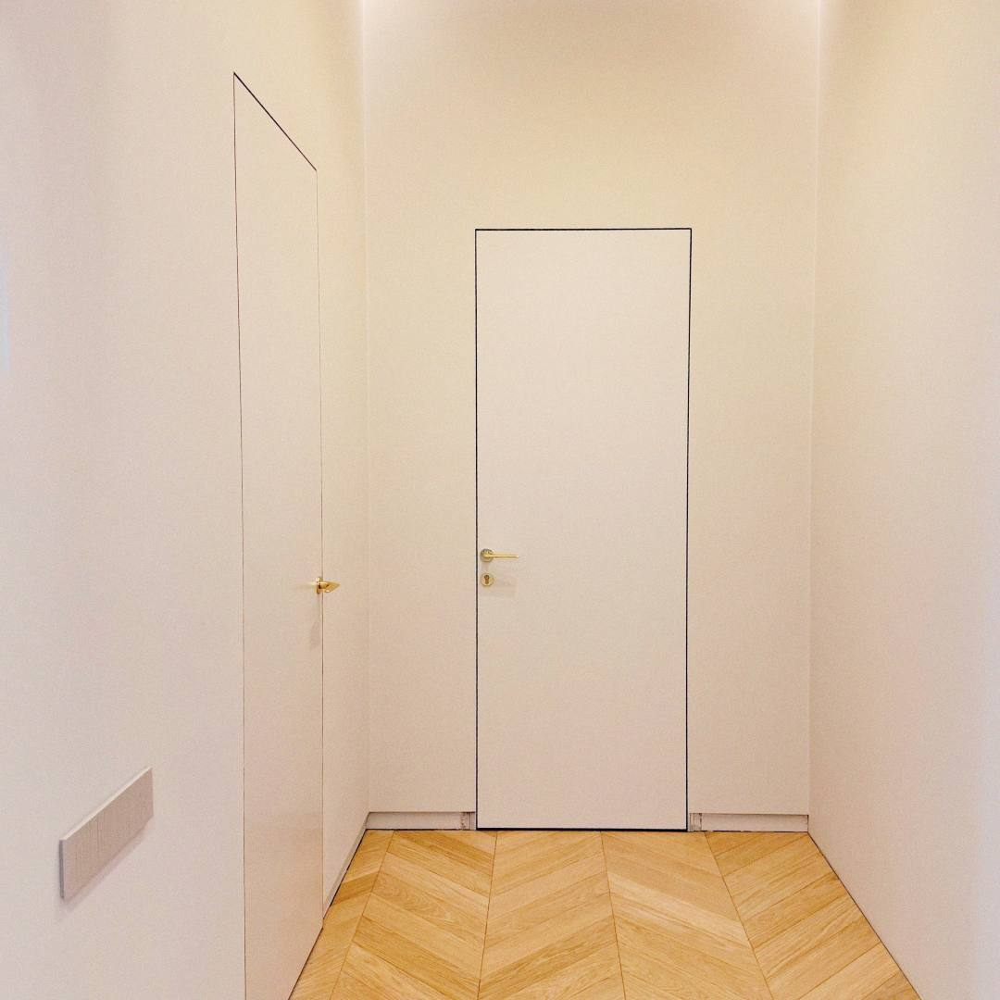
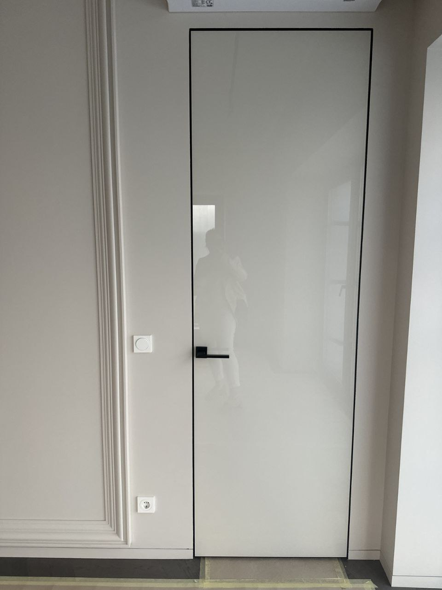

Standard
Výškado 2050 mm
Tloušťka křídla4 cm
OtevíráníVen nebo dovnitř
Záruka 24 měsíců
Dveře na míru, které dokonale splývají se stěnou, pro moderní domy, byty a interiérové projekty. Zaměření, odborné poradenství, doprava a profesionální montáž po celé České republice.
Porte Exclusive
Porte Exclusive nabízí moderní interiérové dveře se skrytou zárubní, prémiové interiérové i vstupní dveře a okenní řešení s kompletním servisem. Nejde jen o výběr dveří, ale o přesné, estetické a dlouhodobě spolehlivé řešení pro celý prostor.

Dveřní křídlo může nenápadně splynout se stěnou, nebo se stát výrazným prvkem interiéru. Barvu a povrch vybíráme podle vzorků a charakteru projektu.
Dveře Porte Exclusive jsou dostupné ve variantách Standard, Lux a Premium podle technických požadavků a vizuálního záměru projektu.
Skutečné realizace ve skutečných interiérech. Dveře se skrytou zárubní vyniknou zejména v minimalistických, moderních a prémiových prostorech.








Prémiové dveře nejsou jen otázkou vzhledu. Rozhoduje přesnost rozměrů, výběr materiálů, odborná montáž a odpovědnost za celý průběh zakázky.
Dveře Porte Exclusive pro nestandardní otvory i individuální interiérové projekty.
Barvy ladíme podle vzorníků RAL a NCS a povrch sladíme s celým interiérem.
Kontrolujeme celý proces od zaměření přes dopravu až po montáž.
Zajišťujeme dopravu po celé České republice.
Poskytujeme 24měsíční záruku na výrobky i služby včetně záručního servisu.
Pracujeme s vlastním odborným týmem a za kvalitu jeho práce odpovídáme.
Nemusíte nic odhadovat. Pomůžeme upřesnit technické detaily, styl, rozměry i rozpočet projektu.
Napište nám, pošlete fotografii nebo projekt a krátce společně upřesníme vaše požadavky.
Přesně změříme otvory a zkontrolujeme podmínky pro odbornou montáž.
Vybereme vhodný typ dveří, povrch a kování a připravíme konkrétní kalkulaci.
Dveře dopravíme a odborně namontujeme podle předem dohodnutých podmínek.
Rychlá poptávka
Napište nám přes WhatsApp. Pomůžeme vybrat řešení, které odpovídá prostoru, stylu i rozpočtu.
Cena závisí na rozměrech, povrchu, kování a podmínkách montáže. Přesnou nabídku připravíme po krátké konzultaci a zaměření.
Zakázky realizujeme po celé České a Slovenské republice. Podmínky dopravy a montáže domlouváme individuálně.
Ano. Nabízíme barvy RAL a NCS, dýhu, HPL, zrcadlo, lakované sklo, tapetu a další kombinace.
Ano, Porte Exclusive poskytuje na výrobky a služby záruku 24 měsíců.